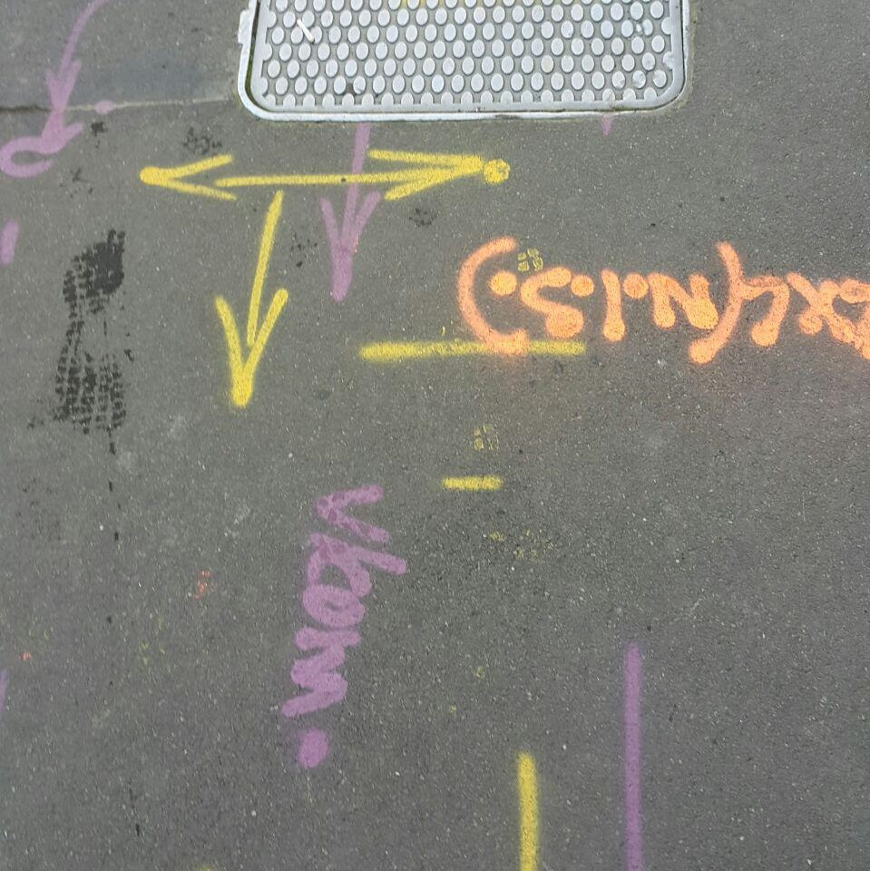

CHOR
Telecom/ Chorus (CHOR) telecommunications

V/COM
Vodafone (?) -- according to the utility mark-out standards VOD stands for Vodafone.
mddn201 spa#1
An exploration of some of Wellington's Internet Infrastructure
Different types of networked objects you see around the CBD.
Entry into the various networking infrastructures that is underground
Chorus Limited -- The biggest provider of telecommunications infrastructure throughout NZ. It has installed 70% of the new fibre optic Ultra-Fast Broadband network in New Zealand. The company used to be part of Telecom New Zealand but separated in 2011.
A telecommunication company that merged with TelstraSaturn to form TelstraClear in 2001. It was once the biggest rival to Telecom New Zealand.
Telecom New Zealand is a telecommunication service provider that offers telephone services, mobile network, internet service and ICT. It is now called Spark New Zealand.
TelstraSaturn as TelstraClear (2001). It was one of New Zealand's largest telecommunications company before becoming part of Vodafone New Zealand in 2012.
According to the NZ Utility mark-out standards, purple stands for Telecommunications - lines, cables and ducting and Ultra-fast broadband - fibre optic cables. These markings on the road shows a glimpse of the networking that exists underground.
Telecom/ Chorus (CHOR) telecommunications
Vodafone (?) -- according to the utility mark-out standards VOD stands for Vodafone.
Internet infrastructure that we can see commonly at home.
Chorus connection box outside the house
DSL connection point
Our computers can connect to the internet through the wireless router
by Harin Choi